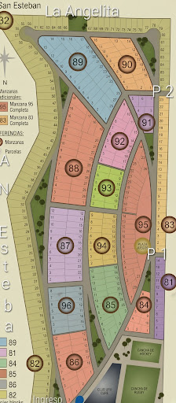

📍 Localizador y Guía GPS - Puesto 2
👆 Haz clic en el plano donde va el visitante y presiona generar QR.

Nota para el destino (Opcional):
Generar QR con el Punto Marcado
Destino marcado
Escanea con el celular para abrir la guía GPS: